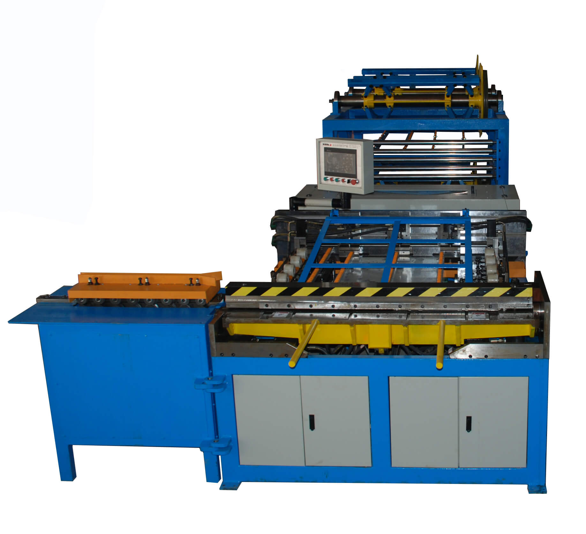
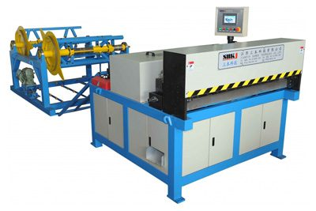

Rectangular duct fabrication
Auto Duct Production Lines
U-shape rectangular duct fabrication lines from entry-level SBAL-II to flagship SBAL-V output — coil in, finished duct out.
Overview
SBKJ auto duct production lines are the fastest way for a sheet metal shop to move from raw coil to finished rectangular HVAC duct. A single operator can feed a coil at one end and receive a shaped, seamed, TDF-flanged duct ready for site delivery at the other — with the line handling leveling, slitting, notching, beading, Pittsburgh or button-punch seam forming, folding and TDF flange roll-forming inline. SBKJ has supplied this equipment to HVAC contractors and metal fabricators in over 100+ countries. The catalogue ranges from the compact SBAL-II (5.5 kW, 18 m/min, up to 1500 mm wide) and the SBAL-III (15.7 kW, 14 m/min, hydraulic notching and shearing) to the flagship SBAL-V (87 kW, 16 m/min, U-shape automatic line). Each line is built to ISO 9001:2015 and CE standards, commissioned at our production line under Factory Acceptance Test (FAT), and shipped with 12-month warranty and on-site commissioning support. Buyer profile: mechanical contractors replacing a manual shop, fabricators upgrading throughput, or factories standardising on SMACNA-class tolerance across a large project portfolio. Project-specific m²/day depends on duct size mix and downstream balancing — share your duct schedule with SBKJ engineering for a sizing estimate.
Machines in this category
Click any machine to view full specifications, video and datasheet.

Auto Duct Line SBAL-V
Flagship U-shape line, 16 m/min, 87 kW, full TDF inline

Automatic C-Driven Slip Duct Line SBAL-V-1250C
C-slip variant for drive-cleat closure

Auto Duct Line SBAL-III
Hydraulic notching & shearing, 14 m/min, 15.7 kW

Auto Duct Line SBAL-II
Entry-level automatic line for growing shops
Specifications at a glance
Compare the flagship models in this category. Full specifications are on each individual product page.
| Model | SBAL-V | SBAL-III | SBAL-II |
|---|---|---|---|
| Speed / Power | 16 m/min · 87 kW | 14 m/min · 15.7 kW | 18 m/min · 5.5 kW |
| Duct cross-section | 120x120 to 1,500x1,500 mm | same | same |
| Sheet thickness | 0.5-1.5 mm | 0.5-1.5 mm | 0.5-1.2 mm |
| Coil width | up to 1,500 mm | up to 1,500 mm | up to 1,300 mm |
| Inline TDF flange | Yes | Optional | Optional |
| Notching | Servo | Hydraulic | Hydraulic |
| Control | PLC + HMI touchscreen | PLC + HMI | PLC |
How to choose
Start from gauge and width. If you need 0.5–1.5 mm galvanized or stainless duct up to 1500 mm wide and stainless capability, choose SBAL-V (16 m/min, 87 kW total drive). For 0.5–1.2 mm galvanized at 1250/1500 mm with hydraulic notching and shearing, SBAL-III (14 m/min, 15.7 kW) hits the sweet spot. SBAL-II (18 m/min, 5.5 kW) is the entry-level rectangular line for a shop currently fabricating by hand that wants automation without the footprint of the flagship line. Next, decide on closure type: Pittsburgh lock is SMACNA-standard and structurally strongest; drive-cleat (C-slip) is faster to close on-site and suits drywall ceiling work — that's where the SBAL-V-1250C C-driven slip duct line earns its place. Finally, confirm whether you need inline TDF flange: if your project uses TDF connectors, inline flange-rolling saves a full secondary operation and typically pays back the price difference within the first year.
Standards and compliance
SMACNA HVAC Duct Construction Standards (U.S.), AS/NZS 4254 (Australia / New Zealand), EN 1505 / EN 1506 (Europe). Every line ships with ISO 9001:2015 factory certification, CE declaration of conformity, PLC cycle log and commissioning report.
Frequently asked questions
How much floor space do I need for an SBAL-V line?
A standard SBAL-V installation needs roughly 25 m length by 5 m width for the main line, plus a 4 m x 3 m area for coil decoiling at the feed end and a 3 m buffer at the exit for finished duct handling. We provide a to-scale GA drawing during quotation so you can plan the exact footprint against your bay.
Can the line handle stainless steel?
Yes — SBAL-V and SBAL-III are both rated for 304/316 stainless steel up to 1.2 mm. Stainless runs need slightly reduced speed and more frequent tool inspection, but the machine geometry does not change. If you plan majority-stainless production, we recommend specifying a stainless-duty tool set at order.
What is the typical commissioning time?
Factory Acceptance Test (FAT) at Australia takes 3-5 working days with the customer present. On-site commissioning after delivery is typically 5-10 days with 1-2 SBKJ engineers, including mechanical alignment, electrical hookup, PLC calibration and operator training on the first production run.
Is training for our operators included?
Yes. Operator training is included in the commissioning visit and covers PLC operation, tooling changeover, preventive maintenance schedule and troubleshooting. We also maintain video training material and provide 72-hour remote support via WhatsApp for 12 months after commissioning.
Workshop integration patterns
An SBKJ auto duct line is the centrepiece of a modern rectangular HVAC duct workshop and replaces what used to be 6–8 separate stations. On a typical layout, the line occupies a single 30 m straight bay with the coil store at the upstream end, the SBAL-V line itself in the middle, and a finished-duct buffer plus packing zone at the downstream end. The TDF flange former is integrated inline on SBAL-V, so there is no separate flanging station. Most SBAL-V workshops also have a parallel spiral tubeformer bay running the round duct workflow — SBKJ supplies the matched machinery and the layout drawing for both bays in the same quotation.
Buyer playbook
Auto duct line buyers are almost always upgrading from a manual or semi-automatic shop. They have hit a labour-cost ceiling, an output ceiling, or both, and they want a single machine that delivers higher throughput with fewer operators. The right starting question is daily output target in m²/shift — under 800 m²/shift the SBAL-III is usually the better economic choice, above 1,000 m²/shift the SBAL-V wins on TCO every time. SBKJ engineers will run a project-specific TCO model from the four numbers you already know: daily target, labour cost per hour, electricity cost, and shifts per day.
Related categories
Ready to specify your line?
Send us the project brief — SBKJ engineers respond within 12 hours with a sized quotation and GA drawing.
Get a quotation in 12 hoursPage reviewed by SBKJ Engineering & QA · Last verified